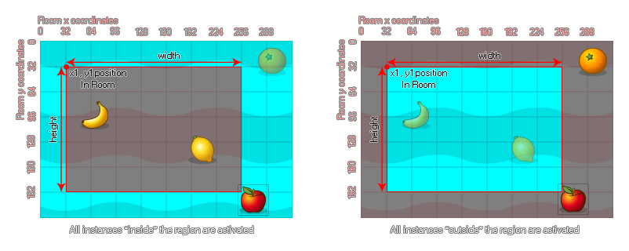

instance_activate_region(left, top, width, height, inside);
| Argument | Description |
|---|---|
| left | The x coordinate of the left of the rectangular region to activate. |
| top | The y coordinate of the top of the rectangular region to activate. |
| width | The width of the region to activate. |
| height | The height of the region to activate. |
| inside | Whether to activate instances on the inside of the region (true) or the outside (false). |
Returns: N/A
With this function you can define a region within the room to activate instances that have previously been deactivated. This region can either be flagged as "inside" or "outside" as demonstrated in the following image: 
You can see in the image above that the "apple" instance is always active because, even if the sprite itself doesn't overlap the region, the bounding box does. So, instances are considered to be within the
region specified when their bounding box overlaps with it, and the state of the collision mask (precise or not) is not taken into consideration.
instance_deactivate_all(true);
instance_activate_region(view_xview[0] - 64, view_yview - 64, view_wview[0] + 128, view_hview[0] + 128, false);
The above code deactivates all instances except the one that is running the code and then actiavtes a region within the room.